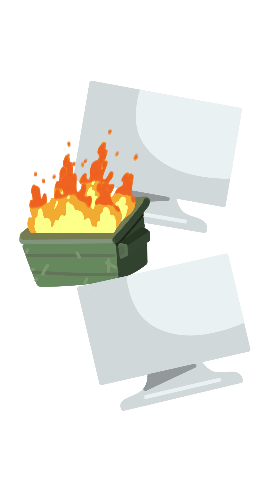

Hot Santionery fue desarrollado por Mr. Fish Games, es una página web para administrar los productos de tu papelería.Este softwarede uso libre permite a los usuarios dar de altaproductos, al igual que dar de baja. Ordenar y realizarbusquedas por colisiones de los mismos productos.
